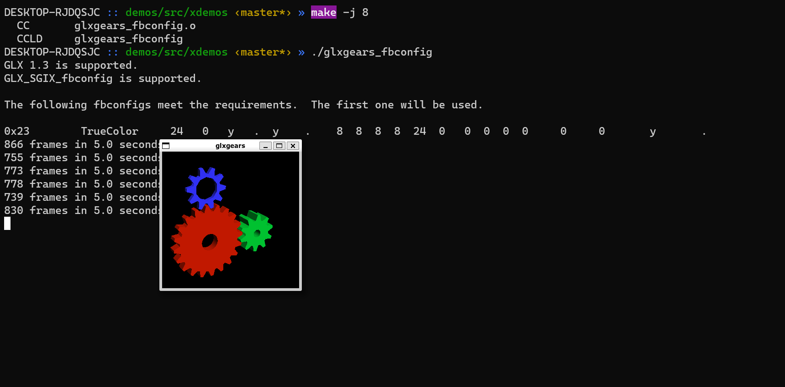
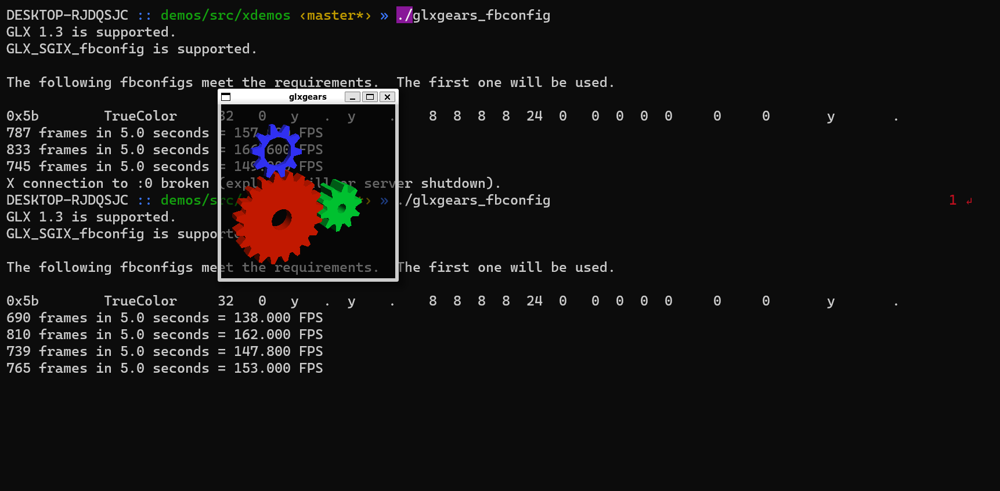

Kylin V10 窗口透明问题
最近在看X11 Server的代码,顺手做下笔记。X11 Server的代码很古老了，有的是1993年写的，目前的X Server实现X.org是从最早的一个X Server实现XFree86 4.4 RC2版本(2004年)派生出来的。
X11 Server编译后会生成若干动态链接库形式的驱动程序和一个可执行程序Xorg. Xorg本质上是一个服务器程序，像其它所有服务器程序一样，它的main函数里有一个while循环，以保证在程序启动后，到程序退出前能够为客户端持续提供服务。Xorg的另一个特点是极具扩展性，所有动态链接库形式的DDX(Device Dependent X)驱动都是以Xorg Module的方式动态加载的，具体加载哪个DDX Driver由Xorg的Config文件配置。
同一个使用glfw的OpenGL程序在Kylin V10系统上可以修改alpha通道改变窗口背景的透明度，而在Ubuntu Focal Fossa系统上却不能？
Alpha通道控制窗口的透明度(transparency)。而X11窗口系统上，alpha通道是否可用，和X11 Server的RENDER扩展有关，下面来自glfw的代码是自明的(self-explanatory)
1 | GLFWbool _glfwIsVisualTransparentX11(Visual* visual) |
关于系统上的X11 Server的RENDER扩展的信息可以通过xdpyinfo命令查看(此命令输出很多信息), 而且RENDER扩展大多数情况下是可用的
1 | xdpyinfo -ext RENDER |
如果你的系统上的RENDER扩展可用，接下来的问题就简单了，你只需要查看一下你的程序(或者glfw)选取的VISUAL的pict format的alphaMask是否为0。如果是0, 则意味着glfw从你的系统获取的GLFW_TRANSPARENT_FRAMEBUFFER属性是FALSE, 也即在glfw创建的窗口中，你无法通过修改alpha通道来改变任何透明度。
1 | RENDER version 0.11 opcode: 138, base error: 140 |
很不幸，我的系统上(Ubuntu Focal Fossa)绝大部分VISUAL对应的都是这个ID为0x2c的pict format, 所以我不能通过修改alpha通道改变窗口背景或内容的透明度，除非我强制让glfw选择其它的VISUAL(对应的pict format不是0x2c)。
为了确定这个问题的确是VISUAL惹的祸，我想摆脱glfw，在单纯的GLX环境下测试一下，正好mesa/demos这个工程下有一个glxgears_fbconfig，这个demo允许通过GLX_VISUAL_ID来指定你想要的VISUAL，我分别使用下面两个VISUAL进行测试
visual id: 0x5b, pict format id 0x28
1
2
3
4
5
6
7
8pict format:
format id: 0x28
type: Direct
depth: 32
alpha: 24 mask 0xff
red: 16 mask 0xff
green: 8 mask 0xff
blue: 0 mask 0xffvisual id: 0x23, pict format id 0x2c
注意，为了更清楚地看出不同，我使用glClearBufferfv将背景设置为半透明
1 | diff --git a/src/xdemos/glxgears_fbconfig.c b/src/xdemos/glxgears_fbconfig.c |
测试结果如下:


从测试结果看，在VisualID=0x23的情况下，这个VISUAL对应的pict format没有alpha通道，所以修改bg的alpha值不会对窗口背景的透明度有任何影响。